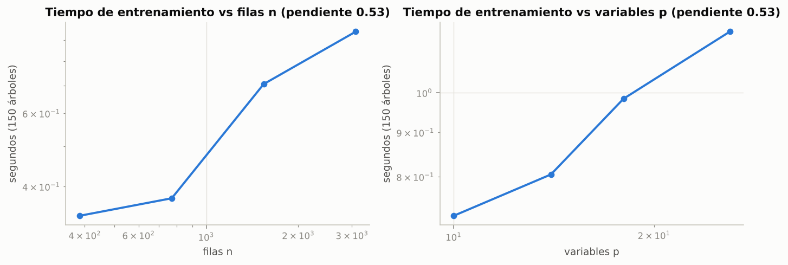
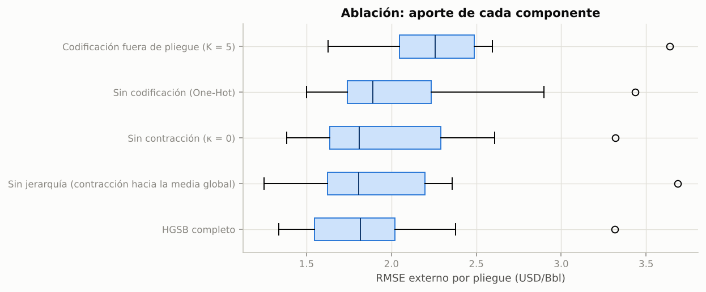
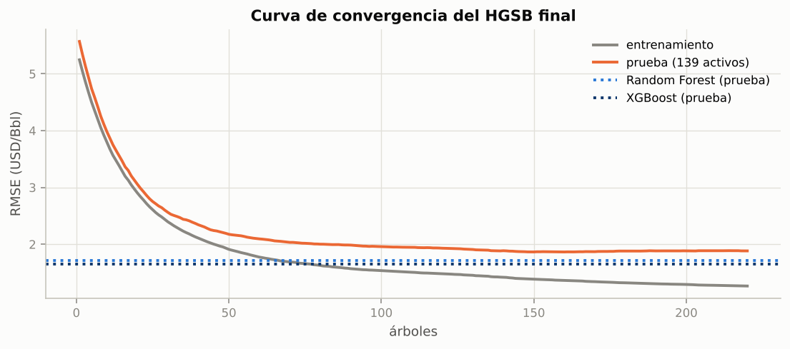
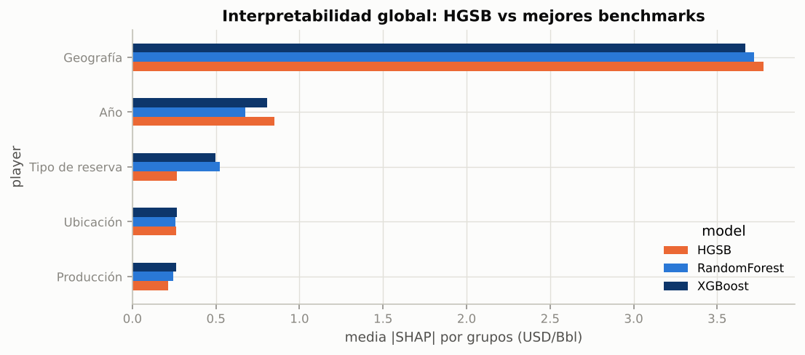

5. Modelo original: HGSB#
Hierarchical Geo-Shrinkage Gradient Boosting (HGSB): gradient boosting programado desde cero en numpy en el que, en cada iteración, las variables categóricas se reemplazan por la media del residuo de su categoría contraída hacia la de su categoría padre en la jerarquía del dominio (región → país, región → elemento productivo, tipo → subtipo de reserva).
5.1 Motivación#
El EDA y los benchmarks dejaron cuatro hechos que motivan el diseño:
La geografía domina el costo. En SHAP, la región es el primer factor (2.2 USD/Bbl de efecto medio) y el tamaño del efecto de Kruskal-Wallis es grande para cuenca, país y región (ε² = 0.84, 0.75 y 0.59).
La geografía es jerárquica y desbalanceada. 45 de 99 países tienen un solo activo. El One-Hot con
min_frequency = 5manda esos países a una categoría «infrecuente» común y pierde que pertenecen a regiones muy distintas.Las observaciones vienen agrupadas. Un activo aporta hasta 10 filas casi iguales: contar filas sobrestima la evidencia de una categoría; lo correcto es contar activos.
Combinar los benchmarks no ayudó (capítulo 3.5): sus errores tienen correlación 0.96. La mejora tiene que venir de usar mejor la información, no de promediar modelos.
5.2 Formulación matemática#
Datos. \(\mathcal D = \{(\mathbf x_i, y_i, a_i)\}_{i=1}^n\), con \(a_i \in \{1,\dots,A\}\) el activo de la fila \(i\). Cada \(\mathbf x_i\) tiene variables numéricas \(\mathbf u_i\) (año, log-producción, indicador de faltante) y categóricas \(c_i^{(1)},\dots,c_i^{(C)}\). Una función \(\mathrm{pa}(\cdot)\) asigna a cada variable categórica su variable padre (o ninguna).
Boosting. Con pérdida cuadrática \(L(y,F)=\tfrac12 (y-F)^2\):
donde el gradiente negativo es el residuo \(r_i^{(m)} = y_i - F_{m-1}(\mathbf x_i)\).
Residuo por activo. \(\bar r_a = \frac{1}{n_a}\sum_{i:\,a_i=a} r_i^{(m)}\).
Codificación contraída. Para la categoría \(k\) de la variable \(c\), con \(S_k=\sum_{a\in k}\bar r_a\) y \(n_k = |\{a \in k\}|\) (número de activos):
\(W_{kj}\) es la fracción de activos de la categoría \(k\) que pertenecen a la categoría padre \(j\). Solo depende de la composición de los activos, no del objetivo. Una categoría no vista en entrenamiento hereda la codificación de su padre.
Árbol. Sobre \(\mathbf z_i = [\mathbf u_i, \tilde e^{(1)}(c_i^{(1)}),\dots,\tilde e^{(C)}(c_i^{(C)})]\) se ajusta un árbol por histogramas con la ganancia de segundo orden (\(g_i=-r_i\), \(h_i=1\)) y pesos de hoja regularizados:
Sustento teórico#
Proposición 1 (contracción de Bayes empírico). Si \(\bar r_a \mid \theta_k \sim \mathcal N(\theta_k,\sigma^2)\) para los activos de la categoría \(k\) y \(\theta_k \sim \mathcal N(\pi_k, \tau^2)\), entonces \(\mathbb E[\theta_k \mid \bar r] = \frac{S_k + \kappa \pi_k}{n_k+\kappa}\) con \(\kappa = \sigma^2/\tau^2\).
Demostración. La posterior de \(\theta_k\) es normal con precisión \(n_k/\sigma^2 + 1/\tau^2\) y media \(\big(\frac{S_k}{\sigma^2} + \frac{\pi_k}{\tau^2}\big)\big/\big(\frac{n_k}{\sigma^2}+\frac{1}{\tau^2}\big)\). Al multiplicar numerador y denominador por \(\sigma^2\) se obtiene la ecuación (2). Esta media posterior minimiza el riesgo cuadrático bayesiano, y su versión empírica domina al promedio simple cuando hay tres o más categorías (James-Stein; [Efron and Morris, 1975, James and Stein, 1961]). \(\square\)
Consecuencias: si \(n_k = 1\) (un solo activo), \(\tilde e_k\) se acerca a la región tanto más cuanto mayor es \(\kappa\); si \(n_k \to \infty\), \(\tilde e_k \to S_k/n_k\). Con \(\kappa = 0\) se recupera el promedio simple (ablación «sin contracción»).
Proposición 2 (partición óptima por orden). Para pérdida cuadrática y una variable categórica, la mejor partición binaria de sus categorías separa las categorías ordenadas por su media en un punto de corte [Fisher, 1958]. Por eso un umbral sobre \(\tilde e\) explora particiones óptimas con un solo barrido de \(K\) puntos en vez de \(2^{K-1}\). Con \(\kappa > 0\) el orden es el de las medias contraídas, que es más estable en categorías pequeñas.
Proposición 3 (descenso monótono y terminación). Con subsample = 1, \(\eta \in (0,1]\) y \(\lambda \ge 0\), la
pérdida de entrenamiento no aumenta en ninguna iteración.
Demostración. En una hoja con \(H\) filas y suma de residuos \(G\), el cambio de pérdida al sumar \(\eta w^*\) es
\(\sum (r_i-\eta w^*)^2-\sum r_i^2 = -\frac{\eta G^2}{H+\lambda}\big(2 - \frac{\eta H}{H+\lambda}\big) \le 0\), porque
\(\eta H/(H+\lambda) \le 1\). Sumando sobre hojas, \(L(F_m) \le L(F_{m-1})\). El algoritmo termina tras \(M\) iteraciones
y la sucesión de pérdidas, acotada por debajo por 0, converge. La prueba unitaria
test_training_loss_non_increasing lo verifica numéricamente. \(\square\)
Pseudocódigo#
Entrada: {(xᵢ, yᵢ, aᵢ)}, jerarquía pa(·), M, η, d, λ, γ, κ, B bins, subsample, colsample
Salida : F_M y, por iteración, las tablas ẽ y el árbol h_m
1 F₀ ← media(y)
2 para m = 1 … M:
3 rᵢ ← yᵢ − F_{m−1}(xᵢ) ▷ gradiente negativo
4 r̄ₐ ← media de rᵢ en el activo a ▷ se cuenta por activo
5 para cada variable c en orden topológico (padres primero):
6 S_k ← Σ_{a∈k} r̄ₐ ; n_k ← #activos en k
7 π_k ← W_k · ẽ_pa(c) (raíz: media global de r̄)
8 ẽ_k ← (S_k + κ·π_k)/(n_k + κ) ▷ ecuación (eq-shrink)
9 zᵢ ← [uᵢ, ẽ(cᵢ)] ; discretizar cada columna en ≤ B bins por cuantiles
10 muestrear filas (subsample) y columnas (colsample)
11 h_m ← árbol de profundidad ≤ d con la ganancia (eq-gain); detener un nodo si
Gan ≤ 0 o H < 2·min_child_weight
12 F_m ← F_{m−1} + η·h_m(z)
13 Predicción de x nuevo: ẽ_c(x) desde las tablas (categoría no vista → ẽ del padre),
F_M(x) = F₀ + η Σ_m h_m(z_m(x))
import sys, time, subprocess, warnings, pickle, json
sys.path.insert(0, "..")
warnings.filterwarnings("ignore")
import numpy as np
import pandas as pd
import matplotlib.pyplot as plt
from src import config as C
from src.data import load_model_data, split_dev_test
from src.original_model import HierarchicalShrinkageBoosting as HGSB, DEFAULT_HIERARCHY
from src.viz import set_style, SERIES
C.set_global_seed()
set_style()
pd.set_option("display.float_format", lambda v: f"{v:,.4f}")
ORIG = C.RESULTS_DIR / "original"
dev, test = split_dev_test(load_model_data())
FEATS = C.SCENARIOS["A_estructural"]["numeric"] + C.SCENARIOS["A_estructural"]["categorical"]
print("Jerarquía:", DEFAULT_HIERARCHY)
Jerarquía: {'RegionName': None, 'CountryName': 'RegionName', 'ProductionElementName': 'RegionName', 'ReserveTypeName': None, 'SupplySubTypeName': 'ReserveTypeName', 'ReserveLocationName': None, 'MemberOpec': None}
5.3 Análisis de complejidad#
Con \(n\) filas, \(A\) activos, \(p\) variables de entrada al árbol, \(K_c\) categorías de la variable \(c\), \(B\) bins y profundidad \(d\), cada iteración cuesta:
Paso |
Costo |
|---|---|
Residuo y medias por activo |
\(O(n)\) |
Codificación contraída (tablas y prior \(W\tilde e\)) |
\(O\big(\sum_c (A + K_c K_{\mathrm{pa}(c)})\big)\) |
Discretización por cuantiles |
\(O(C\, n\log n)\) |
Árbol por histogramas (una pasada de |
\(O(d\, n\, p + 2^d p B)\) |
Actualización de \(F\) |
\(O(n\, d)\) |
Entrenamiento: \(O\big(M\,[\,n(C\log n + d\,p) + 2^d p B + \sum_c K_c K_{\mathrm{pa}(c)}\,]\big)\), casi lineal en \(n\). Inferencia de \(m\) filas: \(O(M\, m\,(C + d))\). Memoria: \(O(M(2^d + \sum_c K_c))\) para los árboles y las tablas. A continuación se contrasta con el tiempo medido al variar \(n\) y \(p\) (columnas numéricas de ruido), con hiperparámetros fijos.
Xd, yd = dev[FEATS + [C.GROUP]], dev[C.TARGET].to_numpy()
rng = np.random.default_rng(C.SEED)
rows = []
fixed = dict(n_estimators=150, learning_rate=0.05, max_depth=6, kappa=10, oof_folds=1, random_state=C.SEED)
for frac in [0.125, 0.25, 0.5, 1.0]:
idx = rng.choice(len(Xd), int(frac * len(Xd)), replace=False)
t = time.perf_counter(); HGSB(**fixed).fit(Xd.iloc[idx], yd[idx]); rows.append({"variable": "n", "valor": len(idx), "s": time.perf_counter() - t})
for k in [0, 4, 8, 16]:
Xk = Xd.copy()
noise = [f"ruido{j}" for j in range(k)]
for c in noise:
Xk[c] = rng.normal(size=len(Xk))
t = time.perf_counter(); HGSB(numeric=["Year", "Production"] + noise, **fixed).fit(Xk, yd)
rows.append({"variable": "p", "valor": 10 + k, "s": time.perf_counter() - t})
tim = pd.DataFrame(rows)
fig, axes = plt.subplots(1, 2, figsize=(10, 3.6))
for ax, v, lab in zip(axes, ["n", "p"], ["filas n", "variables p"]):
s = tim[tim.variable == v]
slope = np.polyfit(np.log(s.valor), np.log(s.s), 1)[0]
ax.loglog(s.valor, s.s, "o-", color=SERIES[0])
ax.set_title(f"Tiempo de entrenamiento vs {lab} (pendiente {slope:.2f})")
ax.set_xlabel(lab); ax.set_ylabel("segundos (150 árboles)")
fig.tight_layout(); plt.show()
tim

| variable | valor | s | |
|---|---|---|---|
| 0 | n | 385 | 0.3403 |
| 1 | n | 771 | 0.3750 |
| 2 | n | 1542 | 0.7058 |
| 3 | n | 3085 | 0.9434 |
| 4 | p | 10 | 0.7214 |
| 5 | p | 14 | 0.8051 |
| 6 | p | 18 | 0.9843 |
| 7 | p | 26 | 1.1762 |
La pendiente en log-log mide el exponente empírico. Frente a \(n\) queda por debajo de 1: con pocos datos domina el costo fijo por nodo (\(2^d p B\)), que no depende de \(n\). Frente a \(p\) es lineal o menor, como predice el término \(d\,n\,p\).
5.4 Implementación#
La clase hereda de BaseEstimator y RegressorMixin, así que funciona con Pipeline, cross_val_score, clone
y la validación anidada del Entregable 2. Todo el núcleo usa solo numpy: tablas de codificación (_tables), árbol
por histogramas (_grow_tree, _Tree.apply) y boosting (fit, staged_predict).
"""Modelo original: Hierarchical Geo-Shrinkage Gradient Boosting (HGSB).
Idea
----
En cada iteración de boosting, las variables categóricas jerárquicas (región → país,
región → elemento productivo, tipo → subtipo de reserva) se convierten en un valor
numérico: la **media del residuo actual de su categoría, contraída (shrinkage) hacia la
media de su categoría padre**. La contracción es la media posterior de un modelo
normal-normal (empirical Bayes / James-Stein):
ẽ_c = (S_c + κ · π_c) / (n_c + κ)
con S_c la suma de residuos medios por activo de la categoría c, n_c su número de
activos, π_c la codificación de la categoría padre (o la media global en la raíz) y κ
la fuerza de contracción. Para las filas de entrenamiento la codificación se calcula
**fuera de pliegue por grupos de activos** (los activos se reparten al azar en K pliegues,
re-sorteados en cada iteración), de modo que el árbol no puede ver el residuo del activo
que intenta ajustar. (Dejar fuera solo el propio activo, LOO, filtra el objetivo de forma
inversa: dentro de una categoría la codificación decrece con el residuo propio.) Sobre esas codificaciones y las
variables numéricas se ajusta un árbol de regresión por histogramas con la ganancia de
segundo orden y los pesos de hoja regularizados w* = −G/(H + λ).
Ventajas que motivan el diseño (ver capítulo 5 del Jupyter Book):
1. Países o cuencas con uno o pocos activos (45 de 99 países) toman prestada
información de su región en vez de ser ignorados (One-Hot con min_frequency) o
sobreajustados.
2. Una categoría nunca vista en entrenamiento hereda la codificación de su padre.
3. El orden de las categorías por residuo medio da la partición binaria óptima para
pérdida cuadrática (Fisher, 1958), así que una sola variable codificada sustituye a
decenas de columnas One-Hot.
Todo el núcleo (codificación, árboles, boosting) está programado con numpy.
"""
from __future__ import annotations
import numpy as np
import pandas as pd
from sklearn.base import BaseEstimator, RegressorMixin
from sklearn.utils.validation import check_is_fitted
El archivo completo, comentado y con docstrings, está en src/original_model.py. A continuación el núcleo de
la codificación:
def _tables(self, r_asset, mask):
"""Tablas de codificación contraída calculadas con los activos ``mask``.
ẽ_c = (S_c + κ·π_c) / (n_c + κ), π_c = W_c · ẽ_padre (o la media global en la raíz).
"""
k = float(self.kappa)
ra = r_asset[mask]
root = float(ra.mean()) if mask.any() else 0.0
tables = {}
for c in self._order():
p = self.hier_[c] if self.use_hierarchy else None
K = len(self.cat_index_[c])
ca = self._cat_asset[c][mask]
S = np.bincount(ca, weights=ra, minlength=K)
n = np.bincount(ca, minlength=K).astype(float)
prior = np.full(K, root) if p is None else self._W[c] @ tables[p]
if k > 0:
tables[c] = (S + k * prior) / (n + k)
else:
tables[c] = np.where(n > 0, S / np.maximum(n, 1), prior)
return tables, root
5.5 Pruebas unitarias#
tests/test_original_model.py verifica: (i) aprendizaje en datos sintéticos con solución conocida; (ii)
herencia del padre para una categoría no vista; (iii) los límites \(\kappa=0\) (promedio) y \(\kappa\to\infty\)
(prior del padre); (iv) reproducibilidad con la misma semilla; (v) manejo de parámetros y entradas inválidas;
(vi) compatibilidad con sklearn.base.clone y la serialización con joblib; (vii) que el identificador del
activo no se usa para predecir; y (viii) la proposición 3 (pérdida monótona).
out = subprocess.run([sys.executable, "-m", "pytest", "-q", "-p", "no:cacheprovider", "../tests/"],
capture_output=True, text=True)
print(out.stdout[-1500:])
................... [100%]
19 passed in 2.49s
5.6 Hiperparámetros#
Se optimizaron con optimización bayesiana (Optuna-TPE, 8 ensayos iniciales, adquisición EI) dentro de la
misma validación anidada de los benchmarks: mismos 10 pliegues externos y 3 internos por activo, mismo
presupuesto de 30 evaluaciones y semilla 42 (run_original.py).
Hiperparámetro |
Rango |
Escala |
|---|---|---|
|
100–800 |
lineal |
|
0.01–0.3 |
log |
|
3–10 |
lineal |
|
0.1–50 |
log |
|
1–20 |
log |
|
0.01–10 |
log |
|
0.5–1 |
lineal |
hp = []
for k in list(range(C.OUTER_FOLDS)) + ["final"]:
r = pickle.load(open(C.RESULTS_DIR / "cache" / f"A_estructural__HGSB__Bayesiana__{k}.pkl", "rb"))
hp.append({"pliegue": k, **r["best_params"], "RMSE interno": r["best_inner_rmse"], "RMSE externo": r["metrics"]["rmse"],
"búsqueda (min)": r["search_time"] / 60})
hp = pd.DataFrame(hp)
hp
| pliegue | n_estimators | learning_rate | max_depth | kappa | min_child_weight | reg_lambda | subsample | colsample | RMSE interno | RMSE externo | búsqueda (min) | |
|---|---|---|---|---|---|---|---|---|---|---|---|---|
| 0 | 0 | 238 | 0.0788 | 5 | 20.3344 | 2.1655 | 0.7336 | 0.6006 | 0.7972 | 2.0803 | 1.6537 | 3.5157 |
| 1 | 1 | 673 | 0.0119 | 5 | 19.5820 | 1.9954 | 0.2440 | 0.6548 | 0.5371 | 2.1596 | 1.5118 | 4.3912 |
| 2 | 2 | 538 | 0.0111 | 6 | 36.1798 | 1.6502 | 0.0485 | 0.9429 | 0.6936 | 2.3288 | 1.3351 | 2.2336 |
| 3 | 3 | 350 | 0.0141 | 5 | 10.1068 | 1.4403 | 0.0141 | 0.7204 | 0.8723 | 2.4106 | 1.4344 | 1.6497 |
| 4 | 4 | 120 | 0.1105 | 3 | 41.1545 | 1.6592 | 0.7019 | 0.7734 | 0.7904 | 2.1840 | 3.3138 | 1.2163 |
| 5 | 5 | 681 | 0.0452 | 10 | 39.1828 | 16.2329 | 0.0230 | 0.5735 | 0.8485 | 2.3560 | 1.9799 | 3.9169 |
| 6 | 6 | 628 | 0.0123 | 9 | 9.5414 | 1.9328 | 2.5077 | 0.7714 | 0.5710 | 2.2616 | 1.7391 | 4.5379 |
| 7 | 7 | 649 | 0.0236 | 6 | 8.4150 | 1.5879 | 2.4360 | 0.6977 | 0.5684 | 2.0366 | 2.3761 | 2.8172 |
| 8 | 8 | 571 | 0.0296 | 4 | 14.8412 | 2.3815 | 0.0266 | 0.8217 | 0.6154 | 2.0746 | 2.0350 | 3.0702 |
| 9 | 9 | 141 | 0.0298 | 5 | 20.5024 | 1.1573 | 0.2799 | 0.7730 | 0.8966 | 2.0640 | 1.8958 | 1.6054 |
| 10 | final | 220 | 0.0518 | 4 | 22.8713 | 1.1009 | 0.0241 | 0.9031 | 0.7000 | 2.0666 | 1.8837 | 1.4660 |
En casi todos los pliegues el optimizador eligió una contracción fuerte (κ alto): la información del padre pesa como varios activos. Esto concuerda con la proposición 1, porque los efectos de país y cuenca están muy dispersos alrededor de los de su región.
5.7 Estudio de ablación#
Cada variante retira un componente y conserva los hiperparámetros de cada pliegue (10 pliegues externos):
abl = pd.read_csv(ORIG / "ablation.csv")
abl
| Variante | RMSE externo | Δ vs completo | Pliegues peores | p Wilcoxon | |
|---|---|---|---|---|---|
| 0 | HGSB completo | 1.927 ± 0.579 | — | — | — |
| 1 | Sin jerarquía (contracción hacia la media global) | 2.002 ± 0.678 | +0.075 | 5/10 | 0.375 |
| 2 | Sin contracción (κ = 0) | 2.018 ± 0.595 | +0.091 | 8/10 | 0.064 |
| 3 | Codificación fuera de pliegue (K = 5) | 2.346 ± 0.538 | +0.418 | 10/10 | 0.002 |
| 4 | Sin codificación (One-Hot) | 2.110 ± 0.613 | +0.182 | 7/10 | 0.049 |
A = pd.read_csv(ORIG / "ablation_folds.csv", index_col=0)
fig, ax = plt.subplots(figsize=(9, 3.8))
order = A.mean().sort_values().index
ax.boxplot([A[c] for c in order], vert=False, tick_labels=order, patch_artist=True,
boxprops=dict(facecolor="#cde2fb", color=SERIES[0]), medianprops=dict(color="#0d366b"))
ax.set_xlabel("RMSE externo por pliegue (USD/Bbl)"); ax.set_title("Ablación: aporte de cada componente")
fig.tight_layout(); plt.show()

5.8 Convergencia e interpretabilidad#
conv = pd.read_csv(ORIG / "convergence.csv")
fig, ax = plt.subplots(figsize=(8, 3.6))
ax.plot(conv.iteration, conv.train_rmse, label="entrenamiento", color="#898781")
ax.plot(conv.iteration, conv.test_rmse, label="prueba (139 activos)", color=SERIES[1])
ax.axhline(conv.rf_test_rmse.iloc[0], ls=":", color=SERIES[0], label="Random Forest (prueba)")
ax.axhline(conv.xgb_test_rmse.iloc[0], ls=":", color="#0d366b", label="XGBoost (prueba)")
ax.set_xlabel("árboles"); ax.set_ylabel("RMSE (USD/Bbl)"); ax.set_title("Curva de convergencia del HGSB final")
ax.legend(); fig.tight_layout(); plt.show()

sg = pd.read_csv(C.RESULTS_DIR / "dashboard" / "shap_global.csv")
piv = sg.pivot(index="player", columns="model", values="mean_abs")[["HGSB", "RandomForest", "XGBoost"]].sort_values("HGSB")
ax = piv.plot.barh(figsize=(8, 3.6), color=[SERIES[1], SERIES[0], "#0d366b"])
ax.set_xlabel("media |SHAP| por grupos (USD/Bbl)"); ax.set_title("Interpretabilidad global: HGSB vs mejores benchmarks")
plt.tight_layout(); plt.show()
piv

| model | HGSB | RandomForest | XGBoost |
|---|---|---|---|
| player | |||
| Producción | 0.2154 | 0.2465 | 0.2633 |
| Ubicación | 0.2616 | 0.2571 | 0.2670 |
| Tipo de reserva | 0.2651 | 0.5248 | 0.4970 |
| Año | 0.8500 | 0.6771 | 0.8079 |
| Geografía | 3.7761 | 3.7202 | 3.6668 |
Los tres modelos coinciden en el orden de importancia: geografía, luego año y tipo de reserva. El HGSB no cambia qué explica el costo; cambia cómo usa la geografía, con información prestada entre niveles. La ventaja frente a XGBoost viene de los países con pocos activos, donde el One-Hot no tiene suficiente información.